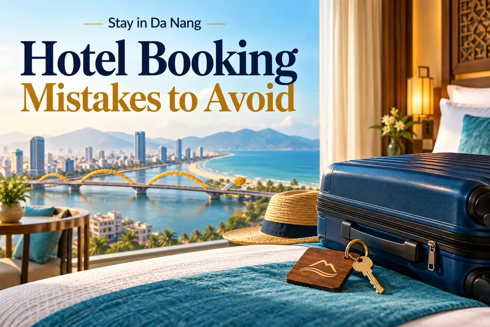

Hotel Booking Mistakes to Avoid · 여행 팁
베트남 여행 가이드: 일정, 숙박 지역, 실제 유산 여행지.

HD 이미지 열기 / 다운로드 · PNG →WebP →


Planning idea · English
Before booking, compare total price, room type, breakfast, cancellation deadline and recent reviews. A few minutes of checking can improve your stay. Compare the same dates, guest count and room conditions, including taxes and deposits. Reconfirm special requests such as adjacent rooms or early check-in.
여행 팁
실제 장소와 일반적인 여행 계획을 소개하는 글이며, 직접 체험한 후기나 실시간 특가가 아닙니다. 출발 전에 공식 기관이나 제공 업체에서 입국 규정, 날씨, 운영 시간, 예약 가능 여부와 가격을 확인하세요.